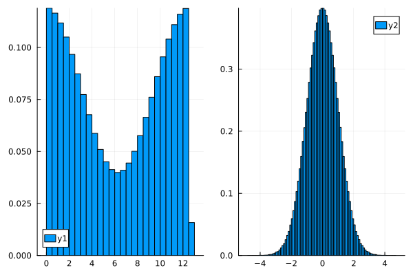
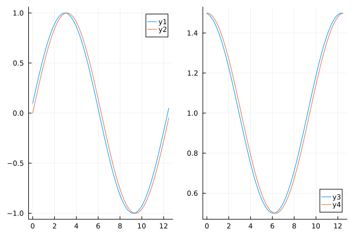
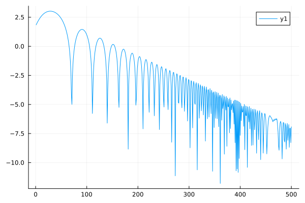

dt = 0.1
nsteps = 100
alpha = 0.5
kx = 0.5
nx = 128
xmin, xmax = 0.0, 2π / kx
n_particles = 100000
degree_smoother = 3
mesh = OneDGrid( xmin, xmax, nx)
particles = ParticleGroup{1,1}( n_particles, charge=1.0, mass=1.0, n_weights=1)
sampler = LandauDamping( alpha, kx )
ParticleInCell.sample!( particles, mesh, sampler)
particles.array[3,:] .= (xmax - xmin) ./ n_particles;
p = plot(layout=2)
histogram!( p[1], particles.array[1,:], normalized=true)
histogram!( p[2], particles.array[2,:], normalized=true)
poisson = OneDPoisson( mesh )
kernel = ParticleMeshCoupling1D( mesh, n_particles, degree_smoother, :collocation)
ex = zeros(nx)
rho = zeros(nx)
for i_part = 1:particles.n_particles
xi = particles.array[1, i_part]
wi = particles.array[3, i_part]
add_charge!(rho, kernel, xi, wi)
end
compute_e_from_rho!(ex, poisson, rho)
x = LinRange( xmin, xmax, nx+1)[1:end-1]
p = plot(layout=(2))
plot!(p[1], x, ex)
plot!(p[1], x, alpha/kx * sin.(kx * x))
plot!(p[2], x, rho)
plot!(p[2], x, 1 .+ alpha * cos.(kx * x))
problem = OneDPoissonPIC( poisson, kernel )
dt = 0.01
nsteps = 500
alpha = 0.1
kx = 0.5
propagator = OneDSplittingOperator( problem, particles )
energy = Float64[]
for j=1:nsteps
ParticleInCell.operator_t!(propagator, 0.5dt)
ParticleInCell.charge_deposition!(propagator)
ParticleInCell.solve_fields!(propagator)
ParticleInCell.operator_v!(propagator, dt)
ParticleInCell.operator_t!(propagator, 0.5dt)
push!(energy, compute_field_energy(problem))
end
t = collect(0:nsteps) .* dt
plot(log.(energy))
